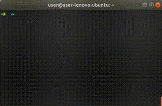
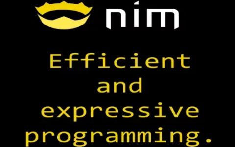

Intro to Nim

...for Python devs

- Python-like Syntax and C-like performance.
- Compiled (Static Binary executable).
- Strong static Typing with Inference.
- Compiles to C / C++.
- Compiles to JavaScript (DOM API).
- Linux, Windows, Mac, Web, etc.
- Easy to make Python modules.
- Easy to use C libs.
Hello World!
$ mkdir /tmp/sample ; cd /tmp/sample/
$ echo 'echo "Hello World"' > hello.nim
$ nim c -r hello.nim # C
Hello World
$ nim cpp -r hello.nim # C++
Hello World
$ nim c --cpu:amd64 --os:windows hello.nim
$ wine hello.exe # Windows
Hello World
$ nim js -d:nodejs hello.nim # NodeJS
$ nodejs hello.js
Hello World
$ nim js hello.nim # Web (Frontend)
$ lsb_release -d
Description: Arch Linux
|
Interactive Interpreter

nimble install inim
Connect C
C:
int sum2Integers(int a, int b) {return a + b;}
|
Nim:
{.compile: "sum.c".}
proc sum2Integers(a, b: cint): cint {.importc.}
echo sum2Integers(1, 2)
|
$ nim c -r example.nim
3
|
Connect Web
JavaScript ⟿ Nim
<!-- index.html --->
<script>function sum2Integers(a, b) {return alert(a + b)}</script>
<script src="examplejs2nim.js"></script>
|
# examplejs2nim.nim
proc sum2Integers(a, b: cint): cint {.importc.}
echo sum2Integers(1, 2)
|
$ nim js -o:examplejs2nim.js examplejs2nim.nim
$ xdg-open index.html
|
Nim ⟿ JavaScript
<!-- index2.html --->
<script src="examplenim2js.js"></script>
<script>alert(sum2Integers(1, 2))</script>
|
# examplenim2js.nim
proc sum2Integers(a, b: cint): cint {.exportc.} = a + b
|
$ nim js -o:examplenim2js.js examplenim2js.nim
$ xdg-open index2.html
|
Connect Python
Nim:
import nimpy
proc function*(name: string): string {.exportpy.} = "Hello " & name
|
Python:
import nim2python
print(nim2python.function("World"))
|
Install Python-Nim bridge:
nimble install nimpy.
Compile:
nim c --app:lib --out:module.so code.nim
Syntax
- Code blocks by Indentation, no Tabs, no Brackets, no Semicolon.
- Comments start with
#, DocStrings with##. - Python-like Tracebacks with the line and type of the error.
- Syntax sugar magics, kinda Python Jupiter Notebook.
- Templates and Macros.
- Function Overload, depending the argument type.
- Export objects with
*,thingis private,thing*is exported. import moduleimports everything that has a*onmodule.nim.- Some Python modules were copied to Nim.
Tools
nim check,nimble checkandnim pretty.- Documentation generator
nim doc. - Packages and hosted Docs https://nimble.directory
- Nim is written on Nim, easy to hack.
- New project template
nimble init. - Task Runner
nimble tasks(kinda Grunt). - Publish package
nimble publish(GitHub PR). - NimSuggest autocomplete for IDE.
- NimInst installer generator (InnoSetup, Bash).
- NimGrep Grep optimized for Nim (CamelCase vs snake_case).
- Garbage Collector, Customizable or Disabled.
PyLib
- Mimics the Python syntax on Nim.
nimble install pylib, thenimport pylib.
>>> import pylib
>>> for i in range(10): # Mimic Pythons range()
print(i, endl=" ") # Mimic Pythons print()
0 1 2 3 4 5 6 7 8 9
>>> print(json_loads("""{"key": "value"}""") # Mimic Pythons json.loads(str)
{"key": "value"}
>>> print(sys.platform) # Mimic Pythons sys.*
"linux"
>>> print(platform.processor) # Mimic Pythons platform.*
"amd64"
>>> print(int('9')) # integer from char.
>>> print("" or "b") # Mimic Pythons str or str
"b"
>>> print("a" or "b")
"a"
>>> timeit(100): # Mimic Pythons timeit.timeit("code_to_benchmark", number=int)
sleep(9) # Repeats this code 100 times. Output is very informative.
2018-05-09T02:01:33 TimeIt: 100 Repetitions on 920 milliseconds, and 9 microseconds, CPU Time 0.00128.
>>> with_open("archive.txt", 'r'): # Mimics Pythons with open(file, mode='r') as file:
while not end_of_file(file): # File is automatically assigned to file variable.
print(file.read_line()) # No need for " as file", just path and mode.
# File is closed automatically.
|
Immutable
varMutable.letImmutable.constImmutable, compilation time.
>>> var foo = "This variable can change"
>>> foo = "Other stuff"
>>>
>>> let bar = "This variable can not change"
>>> bar = "Gives Error"
Error: 'bar' cannot be assigned to
>>>
>>> const baz = "Compilation Constant"
>>> baz = "Gives Error"
Error: 'baz' cannot be assigned to
|
Execution at Compile Time
const constant = "compile time"Constant at compile time.include("inclu.nim")Copies the whole file in-place.static_read("foo.json")Reads the whole file and return a string.static_exec("1 + 1")Executes arguments and return results.static: echo("compile time")Execute code blocks at compile time.
Basic Types
| Nim | Python | Sample Nim | Sample Python | Comments | |
|---|---|---|---|---|---|
string |
str |
"foo" |
"foo" |
Unicode, UTF8, Emoji, etc | |
string |
str |
"""bar""" |
"""bar""" |
String Multi-line | |
char |
- | 'a' |
- | 1 char, Optimized internally to int | |
int |
int |
42 |
42 |
int8, int16, int32, int64, int | |
float |
float |
2.0 |
2.0 |
float32, float64, float | |
bool |
bool |
true, false |
True, False |
true, false on Nim | |
tuple |
tuple |
(1, 2, 3) |
(1, 2, 3) |
tuple on Nim is like a NamedTuple on Py | |
seq |
list |
@[1, 2, 3] |
[1, 2, 3] |
Same Type on all items on Nim | |
set |
set |
{1, 2, 3} |
{1, 2, 3} |
int, char, bool on Nim | |
enum |
enum |
? | ? | On Python nobody uses it | |
array |
- | [1, 2, 3] |
- | Fixed size, same type on all items | |
subrange |
- | range[0..2] |
- | Only accept int from 0 to 2,can use float |
Details
- Python
defits Nimproc. - Python
lambdaits Nimproc(withoput name). - Python
f"{foo},{1+1}"its Nimfmt"{foo},{1+1}". - Python
dictits NimtableorOrderedTable. - Python
NamedTupleits Nimtuple. - Python
setits NimHashSetorOrderedSet. - Python Ternary Operator its Nim
if..elseinline. - Python List Comprehension on
sugarmodule. - Nim string its
"", no''(itschar). - JavaScript Arrow Functions o
sugarmodule.
Nim Unified Functions Call Syntax
>>> let foo = [1, 2, 3]
>>> foo.len
3
>>> foo.len()
3
>>> len(foo)
3
>>> $foo.len
"3"
>>> foo.len.int8
3 : int8
|
Nim Case Insensitive

- camelCase & snake_case use it your way.
>>> let camelCase = 42
>>> camel_case
42
>>> let snake_case = 1
>>> snakeCase
1
|
Speed
- Nim was designed to be fast.
Example, same RayTracer implemented on multiple languages:

Weight
$ echo 'echo "Hello World"' > hello.nim
$ nim c -d:release --app:console --opt:size hello.nim
$ strip --strip-all hello
$ upx --best --ultra-brute hello
$ du -h hello
15K hello
|
- Nim was designed to be lightweight. (Raspi, Router, IoT, etc).
- Nim does not embed VM, Interpreter, etc.
- HelloWorld Go 2Mb, HelloWorld Nim 20Kb.

NimScript
- Interpreted Language (Limited Nim, no std lib).
- Available modules: strutils, ospaths, math, distros.
- Can be used for configuration.
- Can be used for build (build tool).
- Can be used with Nimble.
- Can be used for multi-purpose (standalone).
- File extension
*.nims. - Does not compile, use
nim e archivo.nims.
Hello World NimScript:
#!/usr/bin/env nim
echo "Hello World"
|
Unittests
- Friendly Tests Runner.
nim c -r test "Nombre del test".
suite "Test Name":
echo "Setup: Run once before all tests."
setup:
echo "Setup: Run once before each test."
teardown:
echo "Teardown: Run once after each test."
test "example":
assert true
test "other example":
check(1 != 1)
test "example with expected error":
let foo = [1, 2, 3]
expect(IndexError):
echo foo[9]
echo "Teardown: Run once after all tests."
|
Documentation Generator
Input Format:
- Nim source code
*.nim
Output Formats:
- HTML5 (TOC, Search, links, index, etc).
- reStructuredText.
- JSON.
- LaTeX.
Use:
- Comments starting with
##parsed as RST or text.
CrossCompile
Basically it needs the path to the Compiler.
$ mkdir /tmp/test_nim_crosscompile ; cd /tmp/test_nim_crosscompile/
$ echo 'echo "Hello World"' > hello.nim
$ nim c --cpu:amd64 --os:windows --gcc.exe:x86_64-w64-mingw32-gcc \
--gcc.linkerexe:x86_64-w64-mingw32-gcc hello.nim
$ wine hello.exe
Hello World
|
Crosscompile libs are on mingw-w64-gcc (Arch).
Depends on how friendly your Distro is towards crosscompile libs.
Templates
template templat(argument0, argument1: string, contents: untyped): untyped =
echo 1 + 2 # Simulate logic inside the template.
echo argument0
echo argument1
# Variables and names inside template are local-only by default.
var variable_inject {.inject.} = "Kittens" # Not local-only.
var variable_local = "Puppies" # local-only.
contents
templat("1st argument", "2nd argument"):
echo variable_inject
# Error: undeclared identifier: 'variable_local'.
# echo variable_local
echo "This is the content."
|
Macros
import macros
macro repeat_echo(): untyped =
result = newNimNode(nnkStmtList) # Generate empty result.
var mi_bucle_for = newNimNode(nnkForStmt) # Generate empty for.
mi_bucle_for.add(ident("indx")) # Use variable indx on for.
var rango_para_iterar = newNimNode(nnkInfix).add(
ident("..")).add(newIntLitNode(0), newIntLitNode(9)) # Generate 0..9.
var mi_echo = newCall(ident("echo"), newIntLitNode(42)) # Generate echo 42.
mi_bucle_for.add(rango_para_iterar) # Put range on for loop.
mi_bucle_for.add(mi_echo) # Body of for loop.
result.add(mi_bucle_for) # Put for loop on result.
repeat_echo() # Repeat 42, times 10.
expandMacros: # Generate and view Macro code.
repeat_echo() # for indx in 0 .. 9: echo(42)
|
Template Engine
- Template Engine (ala Jinja).
- File
*.tmpl, shebang y Nim syntax. - Lines with
#are Nim code, else literal.
#? stdtmpl(subsChar = '$', metaChar = '#')
#proc generateXML(name, age: string): string =
# result = ""
<xml>
<name>$name</name>
<age>$age</age>
</xml>
|
#? stdtmpl | standard
#proc generateHTML(title, content: string, tabs: openArray[string]): string =
# result = ""
<head><title> $title </title></head>
<body>
<ul>
#for tab in items(tabs):
<li><a href="${tab}.html">$tab</a></li>
#end for
</ul>
$content
A dollar: $$.
</body>
|
Nim Frontend
- Nim compiles to JavaScript.
- Nim has API of the DOM.
- JavaScript is "First Class Citizen".
- Nim can wrap JS Libs.
Examples:
- Frontend SPA (React-like) https://github.com/pragmagic/karax
- Nim Forum is written on Nim https://forum.nim-lang.org
Interesting packages, Terminal:
- Colors https://github.com/molnarmark/colorize
- Spinners https://github.com/molnarmark/spinny
- ProgressBar https://github.com/euantorano/progress.nim
- Graphics https://github.com/FedericoCeratto/nim-dashing
- Configs https://github.com/euantorano/dotenv.nim
Interesting packages, Web:
- Web Creator https://github.com/ThomasTJdev/nim_websitecreator
- Web Framework https://github.com/dom96/jester
- Markdown to HTML https://github.com/h3rald/hastyscribe
- Scrapper https://github.com/OpenSystemsLab/q.nim
- Jupyter Kernel https://github.com/stisa/jupyter-nim-kernel
- Plotly https://github.com/brentp/nim-plotly
- Design https://github.com/juancarlospaco/nim-random-font-color
Extras
- Homepage https://nim-lang.org
- Nim from Browser https://play.nim-lang.org
- DevDocs http://devdocs.io/nim
- StackOverflow https://stackoverflow.com/questions/tagged/nim
- Rosetta http://rosettacode.org/wiki/Category:Nim
- Tutorial https://nim-lang.org/docs/tut1.html
- Syntax Python https://github.com/Yardanico/nimpylib
- GUI super easy https://github.com/juancarlospaco/nim-kdialog
- Awesome Nim https://github.com/VPashkov/awesome-nim
- Nim Online Community EN https://t.me/nim_lang
Install
Editor / IDE

Vim, Emacs, Atom, Sublime, Kate, Gedit, Geany, KDevelop, VS Code, Spacemacs, NeoVim, Notepad++, LightTable, Aporia, etc etc...
Nim needs more Community
Nim has very interesting features; Lets get this hype started !